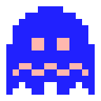
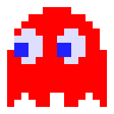

Retro Review: Pac-Man
Step back into the warm, static glow of a CRT monitor. Whenever we dust off the old consoles and dig into that special corner of our memories dedicated to retro gaming, a yellow, pie-shaped hero is almost always waiting for us. 8-bit Pac-Man isn't just a video game; it's a foundational text for the entire medium. It’s the title that defined a generation and proved that digital entertainment could become a global phenomenon.
Going back and playing the 8-bit version today is an exercise in appreciating pure, unadulterated game design. The beauty of Pac-Man lies in its ruthless simplicity. There are no sprawling skill trees, no side quests, and no tutorials. You have one objective: clear the maze of dots. You have one obstacle: four ghosts.
What still blows my mind about this game is the underlying logic. In a time of massive hardware constraints, Toru Iwatani and his team managed to give each ghost—Blinky, Pinky, Inky, and Clyde—a distinct "personality" or AI pattern. Blinky relentlessly chases, Pinky tries to ambush you by aiming in front of your path, Inky is unpredictable, and Clyde just wanders off to his own corner. That level of emergent gameplay on an 8-bit system is nothing short of brilliant. The adrenaline spike you feel when you're trapped between two ghosts, only to snag a Power Pellet at the last possible second and turn the tables, is a thrill that hasn't aged a single day.
So, why a 4 out of 5 instead of a perfect score?
As deeply as I love it, we have to look at it objectively through the lens of replayability. Once you master the mechanics and begin to understand the deterministic patterns of the ghosts, the magic wanes just a bit. The game transitions from a thrilling, panicked survival experience into an exercise in mechanical endurance and pattern execution. It’s essentially the same maze over and over, just faster and less forgiving. Additionally, depending on which specific 8-bit home port you're playing (looking at you, Atari 2600, though the NES version is much better), you might deal with some notorious sprite flickering that can unfairly cost you a life.
Despite those minor critiques, 8-bit Pac-Man remains an absolute masterclass in arcade design. It’s exactly the kind of title that deserves a permanent spot in any retro gaming memories corner. It strips away all the modern bloat and leaves you with the raw, beating heart of what makes video games fun: the challenge, the chase, and the eternal pursuit of a new high score. If you haven't played it recently, do yourself a favor: grab a controller, hit start, and let the nostalgia wash over you. Waka waka.